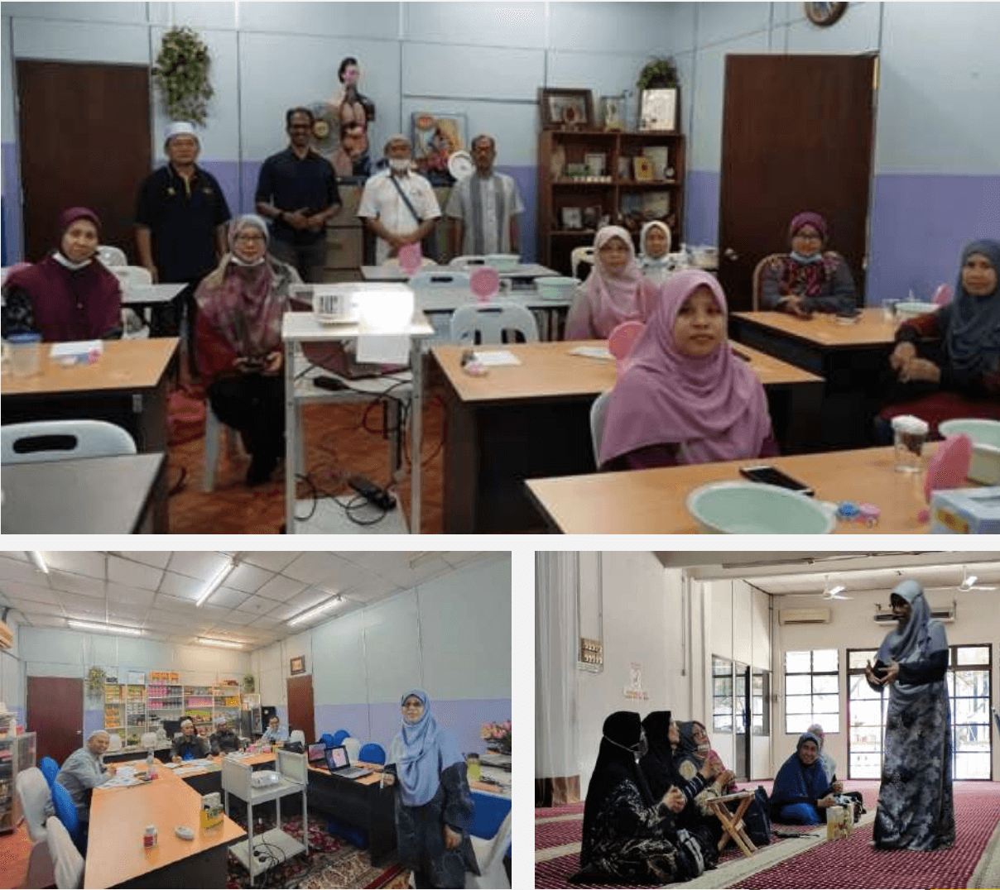

Pengenalan
Pertubuhan Al Mubasyarah bermula sebagai Madrasah Asyarah Mubasyarah pada 26/11/2013, dengan 10 pelajar tahfiz yang memberi inspirasi kepada kami dengan nama Asyarah Mubasyarah bermaksud 10 sahabat yang dijanjikan syurga oleh Nabi Muhammad s.a.w. Alhamdulillah kini diluluskan sebagai Pertubuhan...